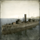

Total War Encyclopaedia
Manual
Units
Buildings
Arts
Clans
Characters
Provinces
Specialities
Campaign Selection
Fall of the Samurai Units
Ironclad
Ironclad
Ironclad - Warrior class
Ironclad - Kotetsu class
Ironclad - L'ocean class
Ironclad - Roanoke class